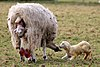

birth

Definition: Birth is the act or process of bearing or bringing forth offspring, also referred to in technical contexts as parturition. In mammals, the process is initiated by hormones which cause the muscular walls of the uterus to contract, expelling the fetus at a developmental stage when it is ready to feed and breathe.
Source: Wikipedia
Wikipedia Page
Wikidata Page